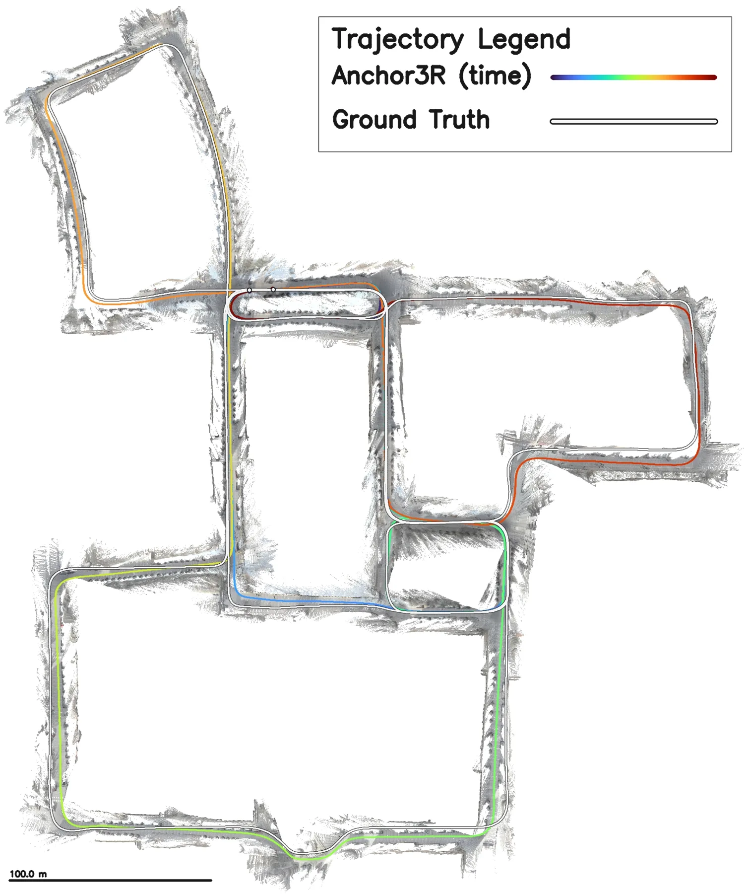
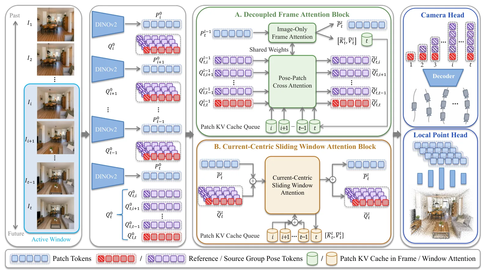
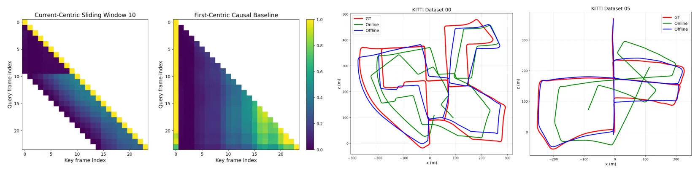
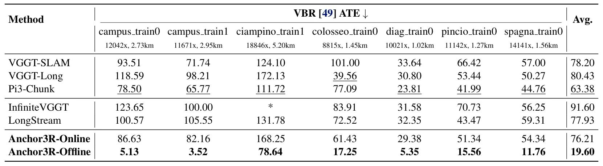
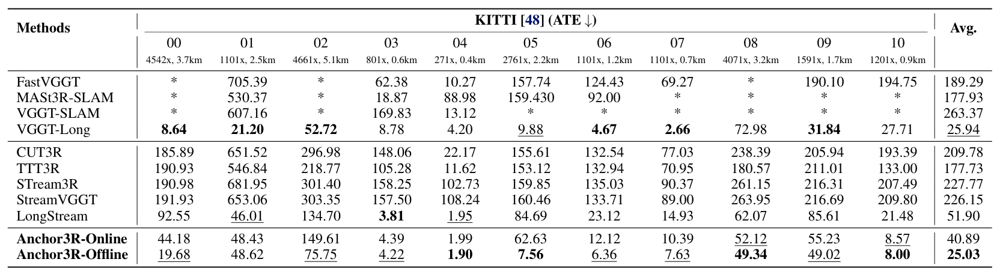
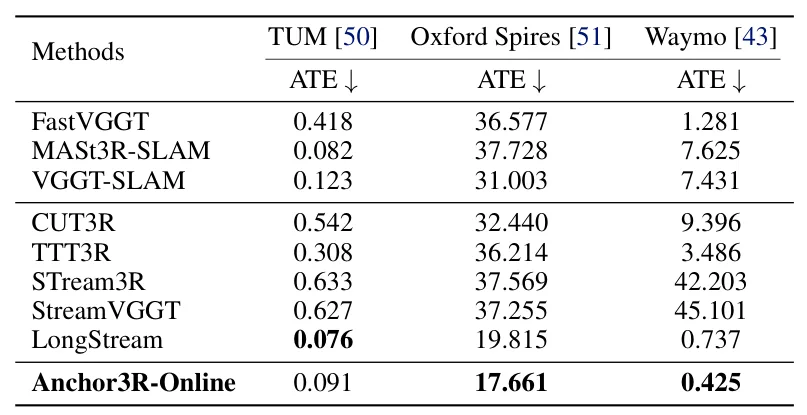
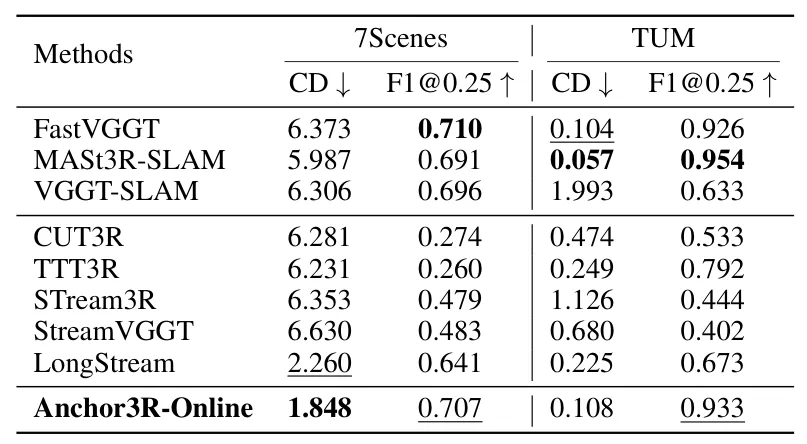
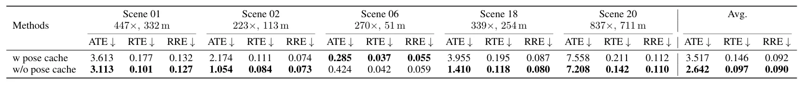

Anchor3R：用于长时视觉建图的流式三维重建Anchor3R: Streaming 3D Reconstruction with Transient Anchors for Long-Horizon Visual Mapping
与 long-horizon visual mapping、streaming reconstruction 和回环融合高度相关，值得优先阅读。
一句话工作总结
把视觉基础模型式重建转成 SLAM 可用的相对测量生成器，服务长序列在线建图。
摘要
Anchor3R 将 feed-forward 三维重建从固定全局坐标回归改为当前帧坐标系下的局部测量预测。每个时间步输出窗口相对位姿和局部 pointmap，再通过在线位姿更新、回环重插入和 motion averaging 拼接成长时全局重建，缓解首帧锚定和长期漂移问题。
Long-horizon online visual mapping is a core capability for robot perception, requiring continuous camera-motion and scene-geometry estimation from visual streams under bounded memory and computation. Recent feed-forward 3D reconstruction models provide strong geometric priors, but their streaming variants often predict poses in a fixed coordinate system tied to the first frame or a persistent scene memory. This fixed-gauge design leads to train--test mismatch, attention bias toward early anchors, and accumulated drift on sequences much longer than those seen during training. We propose \emph{Anchor3R}, a streaming 3D reconstruction framework that treats feed-forward reconstruction as current-centric local measurement prediction rather than persistent global-gauge regression. At each time step, Anchor3R predicts window-relative poses and a local pointmap in the current-frame coordinate system, turning streaming reconstruction into relative-pose measurement generation. These measurements support online pose updates, while loop-closure reinsertion and motion averaging align the trajectory and transform local pointmaps into a coherent global reconstruction. Experiments on indoor, outdoor, driving, and RGB-D benchmarks show that Anchor3R improves long-horizon pose accuracy and dense reconstruction quality over existing streaming baselines, while supporting bounded-memory online inference.
中文解读摘录
- 日期：2026-06-04
- 链接：arXiv / PDF
- 作者简写：P. Tao, C. Cheng, Y. Du 等
- 领域标签：流式三维重建 / 长时视觉建图 / feed-forward reconstruction / loop closure
- 背景/动机：现有 feed-forward 3D reconstruction 模型几何先验强，但流式版本通常把全局坐标系绑定到首帧或长期记忆，长序列上会产生 train-test mismatch、早期锚点偏置和累计漂移。
- 主要创新点/工作：把 feed-forward 重建改成“当前帧坐标系下的局部测量预测”：每个时刻输出窗口相对位姿和 local pointmap，再通过在线位姿更新、loop-closure reinsertion 和 motion averaging 拼成全局重建。
- 为什么值得关注：它把视觉基础模型式 3D 重建转成 SLAM 可用的相对测量生成器，思路很适合与 pose graph / bundle adjustment / 回环模块结合。
图表/页面预览
{kind=link}

{kind=link}

{kind=link}

{kind=link}

{kind=link}

{kind=link}

{kind=link}

{kind=link}
